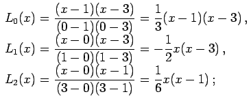

Inhalt Index DeskTop Bronstein

 Numerische Mathematik Approximation, Ausgleichsrechnung, Harmonische Analyse Polynominterpolation
Numerische Mathematik Approximation, Ausgleichsrechnung, Harmonische Analyse Polynominterpolation


Um durch n+1 Punkte  ein Polynom vom Grade n hindurchzulegen, kann man nach LAGRANGE den folgenden Ansatz benutzen:
ein Polynom vom Grade n hindurchzulegen, kann man nach LAGRANGE den folgenden Ansatz benutzen:
Dabei werden mit die LAGRANGEschen Grundpolynome bezeichnet. Der Ansatz (19.158) erfüllt die Interpolationsbedingung (19.156), wenn gilt:
Dabei ist  das KRONECKER-Symbol. Aus der Bedingung (19.159) und der Forderung, daß die LAGRANGEschen Grundpolynome vom Grad n sein sollen, ergibt sich die Darstellung
das KRONECKER-Symbol. Aus der Bedingung (19.159) und der Forderung, daß die LAGRANGEschen Grundpolynome vom Grad n sein sollen, ergibt sich die Darstellung
| (19.160) |
| Beispiel | ||||||||
|
Die durch die Wertetabelle
 Das LAGRANGEsche Interpolationspolynom hängt explizit und zwar linear von den gegebenen Funktionswerten (s. z.B. Verfahren von ADAMS-BASHFORTH). Für praktische Rechnungen ist die LAGRANGEsche Interpolationsformel weniger geeignet. |